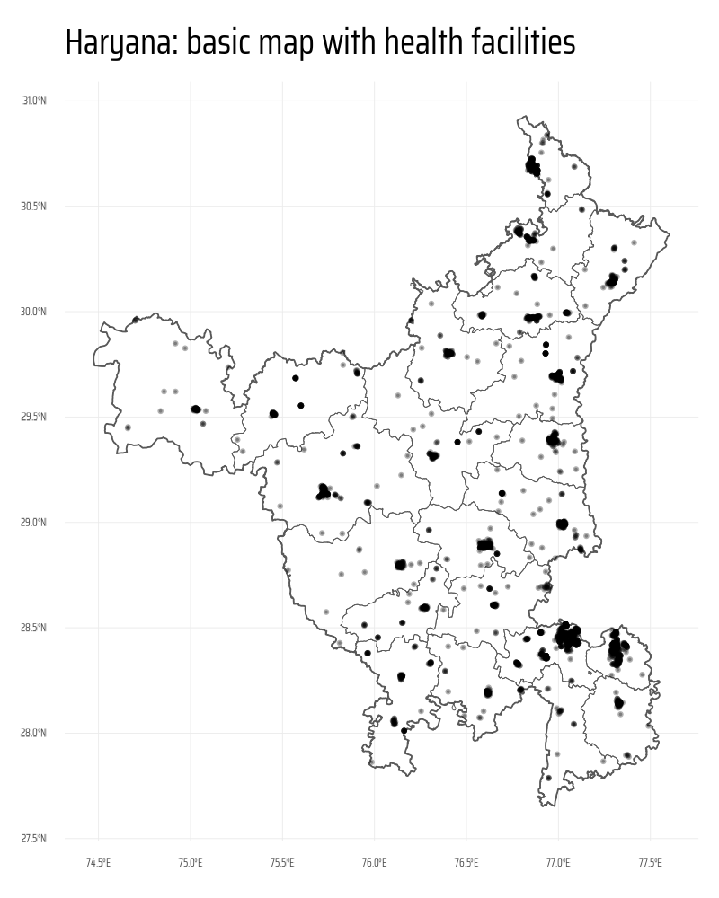
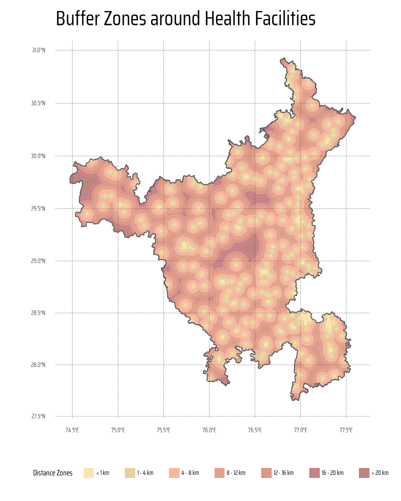
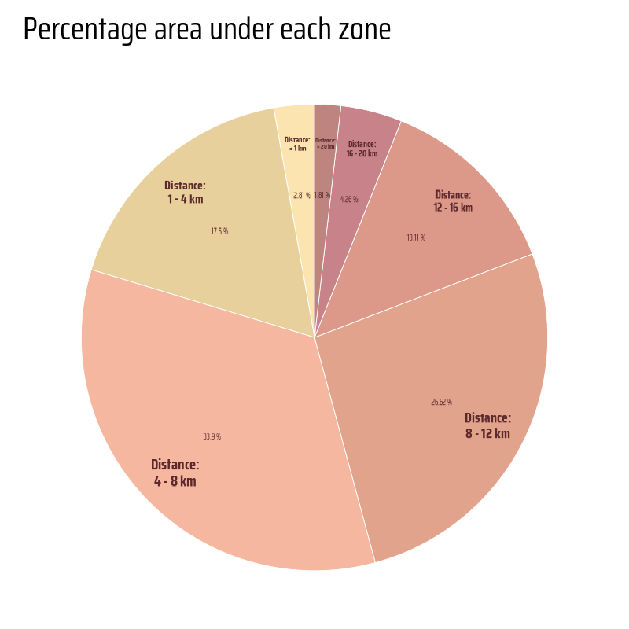
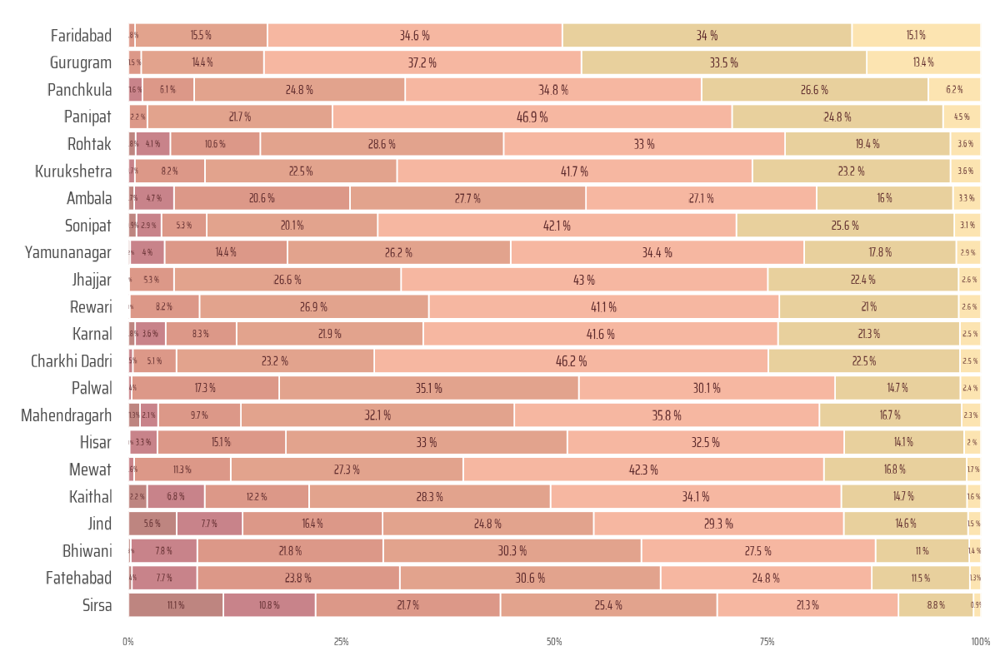

# Data Import and Wrangling Tools
library(tidyverse) # All things tidy
library(here) # File locations and paths
# Final plot tools
library(scales) # Nice Scales for ggplot2
library(fontawesome) # Icons display in ggplot2
library(ggtext) # Markdown text support for ggplot2
library(showtext) # Display fonts in ggplot2
library(colorspace) # Lighten and Darken colours
library(patchwork) # Combining plots
# Mapping tools
library(sf) # All spatial objects in R
library(osmdata) # Getting Open Street Maps dataDistance from nearest Health-Care Facilties using Geocomputation in R
Using the power of {osmdata}, {sf} and {ggplot2} to show different zones in Haryana categorized by distance to nearest health-care facility and computing percentage area of each district that falls in each zone.
Data Visualization
Maps
Public Health
{sf}
{osmdata}
Open Street Maps
Gecomputation
India
Haryana
Geocomputation
Step 1: Loading Libraries, fonts and visualization parameters
This code chunk initializes the required libraries for data processing, visualization, and mapping. Key packages include tidyverse for data manipulation, sf for handling spatial data, and osmdata for extracting OpenStreetMap data. Visualization enhancements are facilitated by ggtext for rich text formatting, showtext for custom fonts, and patchwork for combining multiple plots. Utilities like scales, fontawesome, and colorspace further refine the appearance of visual outputs. The here package ensures file paths are dynamically resolved, promoting reproducibility across systems.
This section customizes the visual aesthetics for the final plot. It adds Google fonts using showtext for titles, body text, and captions. Color variables (text_col, text_hil) and layout settings like background color (bg_col) are defined. Additionally, the code imports Font Awesome icons via sysfonts for embedding social media symbols (e.g., GitHub, Twitter) into plot captions. The descriptive elements of the map, such as the title, subtitle, and caption, are meticulously crafted using glue for dynamic text integration.
Code
# Basics of Final Visualization: Fonts
font_add_google("Mouse Memoirs", "title_font")
font_add_google("Saira Condensed", "body_font")
font_add_google("Saira Extra Condensed", "caption_font")
showtext_auto()
text_col <- "#5D2A2CFF"
text_hil <- "#93282CFF"
bts <- 150
bg_col <- "white"
# Caption stuff for the plot
sysfonts::font_add(
family = "Font Awesome 6 Brands",
regular = here::here("docs", "Font Awesome 6 Brands-Regular-400.otf")
)
github <- ""
github_username <- "aditya-dahiya"
xtwitter <- ""
xtwitter_username <- "@adityadahiyaias"
social_caption_1 <- glue::glue("<span style='font-family:\"Font Awesome 6 Brands\";'>{github};</span> <span style='color:{text_hil}'>{github_username} </span>")
social_caption_2 <- glue::glue("<span style='font-family:\"Font Awesome 6 Brands\";'>{xtwitter};</span> <span style='color:{text_hil}'>{xtwitter_username}</span>")
plot_title <- "Haryana: distance to Health-care facilties"
plot_subtitle <- "Map of Haryana, showing district boundaries (in white) and highways (brown lines), overlaid with zones (translucent shaded regions) categorized by distance to the nearest health-care facility (small black dots). The bar chart shows the percentage of area of a district that falls within each distance zone. The pie-chart shows the zone areas for the entire state."
plot_caption <- paste0(
"**Data:** Open Street Maps; Survey of India",
" | **Code:** ",
social_caption_1,
" | **Graphics:** ",
social_caption_2
)
rm(github, github_username, xtwitter,
xtwitter_username, social_caption_1,
social_caption_2)Step 2: Get Raw Data on Health Facilities and Road Network
This section demonstrates the extraction and saving of OpenStreetMap (OSM) data for Haryana, focusing on healthcare facilities and highways. The osmdata package is used to retrieve spatial data via bounding boxes (getbb) and queries (opq). Healthcare-related amenities (e.g., clinics, hospitals) are fetched and saved temporarily using saveRDS for offline access. Similarly, highways are categorized into two datasets based on types (motorway, primary, etc.).
Code
hy_bbox <- osmdata::getbb("Haryana")
######## Haryana Health
hy_health <- opq(bbox = hy_bbox) |>
add_osm_feature(
key = "amenity",
value = c("clinic", "dentist", "doctors", "hospital", "nursing_home")
) |>
osmdata_sf()
object.size(hy_health) |> print(units = "Mb")
# Temporary Saving the Data for easy use in travel (Saving in a Temp Folder)
saveRDS(
object = hy_health,
file = "haryana_hy_health.rds"
)
# Haryana Highways ---------------------
roads_1 <- opq(bbox = hy_bbox) |>
add_osm_feature(
key = "highway",
value = c("motorway", "trunk", "motorway_link", "trunk_link")
) |>
osmdata_sf()
object.size(roads_1) |> print(units = "Mb")
roads_2 <- opq(bbox = hy_bbox) |>
add_osm_feature(
key = "highway",
value = c("primary", "secondary")
) |>
osmdata_sf()
object.size(roads_2) |> print(units = "Mb")
# Temporary Saving the Data for easy use in travel
saveRDS(
object = roads_1,
file = "haryana_roads_1.rds"
)
saveRDS(
object = roads_2,
file = "haryana_roads_2.rds"
)Step 3: Haryana state boundaries and cleaning raw data
The following code chunk demonstrates how to process spatial data for creating a basic map of Haryana that highlights health facilities and major roads. The workflow begins with loading health facility and road datasets in sf format using readRDS() and filters the relevant features (e.g., roads as LINESTRING geometries). Using sf::read_sf() and the janitor package, Haryana’s state and district boundaries are loaded, cleaned, and transformed to a common CRS. The st_intersection() function is applied to restrict the data to Haryana’s boundaries. Health facilities are converted to point geometries using st_centroid() for uniformity. Finally, a rough map is plotted using ggplot2 with layers for state boundaries, districts, and health facilities.
Code
# Get health facilities data
hy_health <- readRDS(file = "haryana_hy_health.rds")
# Get Roads data
roads_1 <- readRDS(file = "haryana_roads_1.rds")
roads_2 <- readRDS(file = "haryana_roads_2.rds")
# Get only the relevant sf object out of each downlaoded data-set
# For roads, only "LINES" are relevant sf feature.
roads_1 <- roads_1$osm_lines
roads_2 <- roads_2$osm_lines
# Get a Map of the Haryana State / City and keep only the highways and
# facilties within that State for plotting (instead of entire)
# bounding box
region_map <- sf::read_sf(
here::here("data", "india_map", "India_State_Boundary.shp")
) |>
janitor::clean_names() |>
filter(state_name == "Haryana") |>
st_transform(crs = st_crs(roads_1))
districts_map <- sf::read_sf(
here::here("data", "haryana_map", "HARYANA_DISTRICT_BDY.shp")
) |>
janitor::clean_names() |>
st_transform(crs = st_crs(roads_1)) |>
select(district, state, shape_leng, shape_area, geometry) |>
mutate(
state = str_replace_all(state, ">", "A"),
district = str_replace_all(district, ">", "A"),
district = str_replace_all(district, "\\|", "I"),
district = str_to_title(district)
)
# Select Roads and Facilties that are within the selected region
roads_1 <- roads_1 |> st_intersection(region_map)
roads_2 <- roads_2 |> st_intersection(region_map)
# Convert all health facilties to points (instead of polygons etc.)
hy_health <- bind_rows(
hy_health$osm_points |> select(osm_id, geometry),
hy_health$osm_polygons |>
select(osm_id, geometry) |>
mutate(geometry = st_centroid(geometry)),
hy_health$osm_multipolygons |>
select(osm_id, geometry) |>
mutate(geometry = st_centroid(geometry))
) |>
st_intersection(region_map)
# Plotting the rough maps
g <- ggplot() +
geom_sf(data = region_map, fill = NA) +
geom_sf(data = districts_map, fill = NA, linewidth = 0.1) +
geom_sf(
data = hy_health,
alpha = 0.3,
size = 0.1
) +
labs(
title = "Haryana: basic map with health facilities"
) +
theme_minimal(
base_family = "body_font",
base_line_size = unit(0.1, "mm")
) +
theme(
plot.title = element_text(size = 30)
)
ggsave(
plot = g,
filename = here::here("projects", "images",
"hy_health_buffer_zones_1.png"),
height = 1000,
width = 800,
units = "px"
)
Step 4: Creating buffers and computing
This code generates buffer zones around health facilities at varying distances (1 km, 4 km, 8 km, etc.) using the sf package for spatial analysis. It begins by reprojecting all spatial datasets into a projected CRS (EPSG:3857) for accurate distance calculations, and smooth buffer zones. Buffers are created around health facilities using st_buffer(), combined with the region map using st_intersection(), and differentiated to define unique distance zones using st_difference(). The results are combined into a single data frame and visualized with ggplot2, using a customized palette from the paletteer package for distinct buffer zones.
Code
# Palette
# paletteer::paletteer_d("MexBrewer::Taurus1")
# paletteer::paletteer_d("PNWColors::Sunset")
# Convert all maps into a Projected CRS for good smooth buffers
# Plus, the units for this projected CRS is 1 metre
districts_map <- districts_map |> st_transform("EPSG:3857")
hy_health <- hy_health |> st_transform("EPSG:3857")
region_map <- region_map |> st_transform("EPSG:3857")
# Region within 1 km of health facilities
buffer_1 <- hy_health |>
st_buffer(dist = 1000) |>
st_union() |>
st_intersection(region_map)
# Region within 4 km of health facilities
buffer_4 <- hy_health |>
st_buffer(dist = 4000) |>
st_union() |>
st_intersection(region_map) |>
st_difference(buffer_1)
# Region within 8 km of health facilities
buffer_8 <- hy_health |>
st_buffer(dist = 8000) |>
st_union() |>
st_intersection(region_map) |>
st_difference(buffer_4) |>
st_difference(buffer_1)
# Region within 12 km of health facilities
buffer_12 <- hy_health |>
st_buffer(dist = 12000) |>
st_union() |>
st_intersection(region_map) |>
st_difference(buffer_8) |>
st_difference(buffer_4) |>
st_difference(buffer_1)
# Region within 16 km of health facilities
buffer_16 <- hy_health |>
st_buffer(dist = 16000) |>
st_union() |>
st_intersection(region_map) |>
st_difference(buffer_12) |>
st_difference(buffer_8) |>
st_difference(buffer_4) |>
st_difference(buffer_1)
# Region within 20 km of health facilities
buffer_20 <- hy_health |>
st_buffer(dist = 20000) |>
st_union() |>
st_intersection(region_map) |>
st_difference(buffer_16) |>
st_difference(buffer_12) |>
st_difference(buffer_8) |>
st_difference(buffer_4) |>
st_difference(buffer_1)
# Region within 16 km of health facilities
buffer_more_20 <- region_map |>
st_union() |>
st_difference(
hy_health |>
st_buffer(dist = 20000) |>
st_union() |>
st_intersection(region_map)
)
df_buffers <- bind_rows(
buffer_1 |> st_as_sf() |> mutate(buf_dist = "< 1 km"),
buffer_4 |> st_as_sf() |> mutate(buf_dist = "1 - 4 km"),
buffer_8 |> st_as_sf() |> mutate(buf_dist = "4 - 8 km"),
buffer_12 |> st_as_sf() |> mutate(buf_dist = "8 - 12 km"),
buffer_16 |> st_as_sf() |> mutate(buf_dist = "12 - 16 km"),
buffer_20 |> st_as_sf() |> mutate(buf_dist = "16 - 20 km"),
buffer_more_20 |> st_as_sf() |> mutate(buf_dist = "> 20 km")
) |>
mutate(
buf_dist = fct(
buf_dist,
levels = c(
"< 1 km",
"1 - 4 km",
"4 - 8 km",
"8 - 12 km",
"12 - 16 km",
"16 - 20 km",
"> 20 km"
)
)
)
# A temporary plot of the buffer regions
g <- ggplot() +
geom_sf(
data = df_buffers,
mapping = aes(
fill = buf_dist
),
alpha = 0.5,
colour = NA,
linewidth = 0
) +
scale_fill_manual(
values = paletteer::paletteer_d("MexBrewer::Taurus1")
) +
geom_sf(
data = region_map,
fill = NA
) +
labs(
title = "Buffer Zones around Health Facilities",
fill = "Distance Zones"
) +
guides(
fill = guide_legend(
nrow = 1
)
) +
theme_minimal(
base_family = "body_font",
base_line_size = unit(0.1, "mm")
) +
theme(
legend.position = "bottom",
legend.key.height = unit(5, "pt"),
legend.key.width = unit(5, "pt"),
plot.title = element_text(size = 30),
panel.grid = element_line(
colour = "grey30",
linetype = 3
),
legend.text = element_text(
margin = margin(0,2,0,1, "pt")
)
)
ggsave(
plot = g,
filename = here::here("projects", "images",
"hy_health_buffer_zones_2.png"),
height = 1000,
width = 800,
units = "px"
)
Step 5: Compute Percentage of each Zone - for entire state
This code calculates the percentage area of different buffer zones and visualizes the results as a polar bar chart using ggplot2. The st_area() function from the sf package computes the areas of buffer geometries, and the percentages are calculated relative to the total area. The geom_col() function creates stacked bars, styled with transparent fills and white borders. Annotations are added using geom_text() to label the percentages and distances. The chart is transformed into a polar representation with coord_polar(). The colour palette is customized using the paletteer package, and the minimalist design is achieved with theme_void().
Code
hy_buf_areas <- df_buffers |>
mutate(area = as.numeric(st_area(x))) |>
st_drop_geometry() |>
mutate(
perc = area / sum(area)
)
g <- hy_buf_areas |>
ggplot(
mapping = aes(
fill = buf_dist,
x = 1,
y = perc
)
) +
geom_col(
position = position_stack(),
colour = "white",
linewidth = 0.1,
alpha = 0.5
) +
geom_text(
mapping = aes(
label = paste0(round(100 * perc, 2), " %"),
x = 1.1,
y = perc
),
position = position_stack(
vjust = 0.5
),
family = "caption_font",
size = 3,
colour = text_col
) +
geom_text(
mapping = aes(
label = paste0("Distance:\n", buf_dist),
x = 1.3,
y = perc,
size = perc
),
position = position_stack(
vjust = 0.5
),
family = "body_font",
fontface = "bold",
lineheight = 0.3,
colour = text_col
) +
coord_polar(
theta = "y"
) +
scale_size_continuous(range = c(2, 5)) +
scale_x_continuous(expand = expansion(0)) +
scale_fill_manual(
values = paletteer::paletteer_d("MexBrewer::Taurus1")
) +
labs(
title = "Percentage area under each zone"
) +
theme_void(
base_family = "body_font",
base_line_size = unit(0.1, "mm")
) +
theme(
legend.position = "none",
plot.title = element_text(size = 30),
plot.margin = margin(0,0,0,0, "pt")
)
ggsave(
plot = g,
filename = here::here("projects", "images",
"hy_health_buffer_zones_3.png"),
height = 800,
width = 800,
units = "px"
)
Step 6: Compute Zone % for each district
The following code processes spatial data to calculate the percentage area of zones based on their proximity to health facilities for each district. Using the sf package, the code computes intersections between districts and buffer zones, calculates their areas, and aggregates the data into a tibble. It then uses ggplot2 to create a horizontal bar chart showing the proportion of each zone type (by distance) for each district, with customized styling and color palettes from paletteer. This visualization highlights the spatial distribution of zones relative to health facilities.
Code
df_buffers |>
object.size() |>
print(units = "Mb")
df_districts_zones <- tibble()
for(i in 1:22) {
selected_district <- districts_map$district[i]
temp_dist <- districts_map |>
filter(district == selected_district) |>
st_geometry()
temp_buff <- df_buffers |>
st_intersection(temp_dist)
df_districts_zones <- if (i == 1) {
df_districts_zones <- temp_buff |>
mutate(area = as.numeric(st_area(x))) |>
st_drop_geometry() |>
mutate(district = selected_district)
} else {
bind_rows(
df_districts_zones,
temp_buff |>
mutate(area = as.numeric(st_area(x))) |>
st_drop_geometry() |>
mutate(district = selected_district)
)
}
}
rm(selected_district, temp_dist, temp_buff)
plotdf1 <- df_districts_zones |>
as_tibble() |>
group_by(district) |>
mutate(
perc = area / sum(area)
)
districts_levels <- plotdf1 |>
mutate(
sort_var = if_else(buf_dist == "< 1 km", perc, 0)
) |>
filter(sort_var > 0) |>
arrange(sort_var) |>
pull(district)
plotdf2 <- plotdf1 |>
mutate(
district = fct(
district,
levels = districts_levels
)
)
g <- ggplot(
data = plotdf2,
mapping = aes(
y = district,
x = perc,
fill = buf_dist
)
) +
scale_x_continuous(
expand = expansion(0),
labels = label_percent()
) +
geom_col(
colour = "white",
alpha = 0.5,
linewidth = 0.2
) +
geom_text(
mapping = aes(
label = paste0(round(perc * 100, 1), " %"),
size = perc
),
family = "caption_font",
position = position_stack(vjust = 0.5),
check_overlap = TRUE,
colour = text_col
) +
scale_size_continuous(
range = c(2, 5)
) +
scale_fill_manual(
values = paletteer::paletteer_d("MexBrewer::Taurus1")
) +
labs(
x = NULL, y = NULL,
fill = "Distance from Health Facility"
) +
guides(
size = "none",
fill = guide_legend(
nrow = 1
)
) +
theme_minimal(
base_family = "body_font",
base_line_size = unit(0.5, "pt")
) +
theme(
legend.position = "none",
panel.grid = element_blank(),
axis.text.y = element_text(size = 16),
legend.key.size = unit(10, "pt")
)
ggsave(
plot = g,
filename = here::here("projects", "images",
"hy_health_buffer_zones_4.png"),
height = 800,
width = 1200,
units = "px"
)
Step 7: Final Base Map
This code creates a detailed map visualizing healthcare accessibility in Haryana using the ggplot2 package. The map layers include major roads, health facilities, district boundaries, and distance zones to healthcare facilities, plotted with geom_sf(). A color palette is applied via the paletteer package, while legends are customized for clarity. To enhance usability, a north arrow and scale bar are added using ggspatial. Labels for the title, subtitle, and caption are styled, and the overall appearance is refined with ggthemes::theme_map(), ensuring an informative and aesthetically pleasing result.
Code
# The plot
g1 <- ggplot() +
# Plotting the Highways and other major roads
geom_sf(
data = roads_1,
linewidth = 0.9,
alpha = 1,
colour = "#5D2A2CFF"
) +
geom_sf(
data = roads_2,
linewidth = 0.5,
alpha = 0.8,
colour = "#93282CFF"
) +
# Adding the distance zones
geom_sf(
data = df_buffers,
mapping = aes(
fill = buf_dist
),
alpha = 0.5,
colour = NA,
linewidth = 0
) +
# Plotting the Health Facilties
geom_sf(
data = hy_health,
colour = "black",
alpha = 1,
size = 0.2,
pch = 16
) +
# Boundaries of districts overlaid on top
geom_sf(
data = districts_map,
linewidth = 1,
colour = "white",
fill = "transparent"
) +
# Background overall map of Haryana
geom_sf(
data = region_map,
linewidth = 2,
colour = "#5D2A2CFF",
fill = "transparent"
) +
# Scales & Guides
scale_fill_manual(
values = paletteer::paletteer_d("MexBrewer::Taurus1")
) +
guides(
fill = guide_legend(
nrow = 1,
override.aes = list(
pch = 16
)
)
) +
# Add North-Arrow and Scale
ggspatial::annotation_north_arrow(
style = ggspatial::north_arrow_orienteering(
line_col = text_col,
fill = c("#FF9E1BFF", "#C8102EFF"),
text_size = bts,
text_family = "body_font"
),
location = "tr",
height = unit(5, "cm"),
width = unit(5, "cm")
) +
ggspatial::annotation_scale(
bar_cols = c("#FF9E1BFF", "#C8102EFF"),
location = "br",
line_col = text_col,
height = unit(0.75, "cm"),
text_cex = 10,
text_family = "body_font",
text_col = text_col
) +
labs(
title = plot_title,
subtitle = str_wrap(plot_subtitle, 95),
caption = plot_caption,
fill = "Distance to the nearest Health-care facility"
) +
ggthemes::theme_map(
base_size = bts,
base_family = "body_font"
) +
theme(
# Overall
plot.margin = margin(10,5,5,5, "mm"),
plot.title.position = "plot",
text = element_text(
colour = text_col,
lineheight = 0.3,
margin = margin(0,0,0,0, "mm"),
hjust = 0
),
# Legend
legend.position = "bottom",
legend.direction = "horizontal",
legend.justification = c(0.5, 0.5),
legend.text = element_text(
margin = margin(5,5,5,5, "mm")
),
legend.margin = margin(2,0,7,0, "mm"),
legend.key.spacing = unit(10, "mm"),
legend.key.width = unit(20, "mm"),
legend.key.height = unit(10, "mm"),
legend.title.position = "top",
legend.title = element_text(
hjust = 0.5,
margin = margin(0,0,5,0, "mm")
),
# Labels
plot.title = element_text(
size = 2.4 * bts,
hjust = 0.5,
colour = text_hil,
margin = margin(30,0,10,0, "mm"),
family = "body_font",
face = "bold"
),
plot.subtitle = element_text(
size = bts,
hjust = 0.5,
colour = text_hil,
margin = margin(0,0,10,0, "mm"),
family = "body_font"
),
plot.caption = element_textbox(
family = "caption_font",
hjust = 0.5,
margin = margin(10,0,10,0, "mm"),
colour = text_hil,
size = 0.5 * bts
)
)Step 8: Adding Inset Plots
The following code creates a complex visualization that combines multiple plots to analyze the percentage of areas within districts and across the state that fall within specified buffer zones from health facilities. The first inset (g2) uses geom_col() to show district-level data with percentage labels, and the second inset (g3) is a polar plot created with coord_polar() to summarize state-level data. Both plots utilize the paletteer package for color palettes and custom themes for a polished appearance. Finally, these insets are arranged into a composite plot using patchwork::inset_element() and saved as an image with ggsave().
Code
g2 <- ggplot(
data = plotdf2,
mapping = aes(
y = district,
x = perc,
fill = buf_dist
)
) +
scale_x_continuous(
expand = expansion(0),
labels = label_percent()
) +
scale_y_discrete(expand = expansion(0)) +
geom_col(
colour = "white",
alpha = 0.5,
linewidth = 0.2
) +
geom_text(
mapping = aes(
label = paste0(round(perc * 100, 1), " %"),
size = perc
),
family = "caption_font",
position = position_stack(vjust = 0.5),
check_overlap = TRUE,
colour = text_col
) +
scale_size_continuous(
range = c(bts / 60, bts / 15)
) +
scale_fill_manual(
values = paletteer::paletteer_d("MexBrewer::Taurus1")
) +
coord_cartesian(clip = "off") +
labs(
x = NULL, y = NULL,
fill = "Distance from Health Facility",
title = "Percentage area of districts that falls in\neach distance zone"
) +
guides(
size = "none",
fill = guide_legend(
nrow = 1
)
) +
theme_minimal(
base_family = "body_font",
base_line_size = unit(0.5, "pt"),
base_size = bts * 0.75
) +
theme(
legend.position = "none",
panel.grid = element_blank(),
plot.margin = margin(2,2,2,2, "mm"),
text = element_text(
colour = text_col,
margin = margin(0,1,0,0, "mm")
),
axis.ticks = element_blank(),
axis.ticks.length = unit(0, "mm"),
axis.text = element_text(
colour = text_hil,
size = bts * 0.4,
margin = margin(0,0,0,0, "mm")
),
plot.title.position = "plot",
plot.title = element_text(
margin = margin(0,0,5,0, "mm"),
lineheight = 0.3,
colour = text_hil
),
plot.background = element_rect(
fill = "transparent",
colour = "transparent"
),
panel.background = element_rect(
fill = "transparent",
colour = "transparent"
)
)
g3 <- hy_buf_areas |>
ggplot(
mapping = aes(
fill = buf_dist,
x = 1,
y = perc
)
) +
geom_col(
position = position_stack(),
colour = "white",
linewidth = 0.2,
alpha = 0.5
) +
geom_text(
mapping = aes(
label = paste0(round(100 * perc, 1), "%"),
x = 1.52,
y = perc
),
position = position_stack(
vjust = 0.5
),
family = "caption_font",
size = bts / 9,
colour = text_col
) +
geom_text(
mapping = aes(
label = paste0("Distance:\n", buf_dist),
x = 1.25,
y = perc,
size = perc
),
position = position_stack(
vjust = 0.5
),
family = "body_font",
fontface = "bold",
lineheight = 0.3,
colour = text_col,
check_overlap = TRUE
) +
coord_polar(
theta = "y"
) +
scale_size_continuous(range = c(bts / 25, bts / 10)) +
scale_x_continuous(expand = expansion(0)) +
scale_fill_manual(
values = paletteer::paletteer_d("MexBrewer::Taurus1")
) +
labs(
title = "Percentage area of the entire state, that falls within each\ndistance zone from the nearest Health-care facility"
) +
theme_void(
base_family = "body_font",
base_size = bts * 0.75
) +
theme(
legend.position = "none",
plot.margin = margin(0,0,0,0, "pt"),
plot.title = element_text(
margin = margin(0,0,-7,-90, "mm"),
lineheight = 0.3,
colour = text_hil
),
plot.title.position = "plot",
plot.background = element_rect(
fill = "transparent",
colour = "transparent"
),
panel.background = element_rect(
fill = "transparent",
colour = "transparent"
)
)
g <- g1 +
inset_element(
p = g2,
left = -0.07, right = 0.42,
bottom = 0.1, top = 0.34,
align_to = "full",
clip = FALSE
) +
inset_element(
p = g3,
left = 0, right = 0.65,
bottom = 0.58, top = 0.78,
align_to = "full",
clip = FALSE
) +
plot_annotation(
theme = theme(
plot.background = element_rect(
fill = "transparent",
colour = "transparent"
),
panel.background = element_rect(
fill = "transparent",
colour = "transparent"
)
)
)
# Overall Final Composed plot
ggsave(
plot = g,
filename = here("projects", "images",
"hy_health_buffer_zones.png"),
height = 36,
width = 24,
units = "in",
bg = bg_col
)
Step 9: Thumbnail for webpage, and list of packages used
The following code demonstrates how to create a thumbnail image for use on a webpage and document the R session information for reproducibility. It uses the magick package to read an image, resize it to a width of 400 pixels, and save it as a smaller thumbnail version. Subsequently, various packages which were loaded to assist with data wrangling (tidyverse, here), plotting (scales, ggtext, patchwork), and mapping (sf, osmdata) are shown as Session Information. The sessioninfo package retrieves details of loaded R packages, which are then formatted into an interactive table using gt and displayed with searchable features.
Code
# Saving a thumbnail
library(magick)
# Saving a thumbnail for the webpage
image_read(here::here("projects", "images",
"hy_health_buffer_zones.png")) |>
image_resize(geometry = "400") |>
image_write(
here::here(
"projects",
"images",
"hy_health_buffer_zones_thumbnail.png"
)
)Code
# Data Import and Wrangling Tools
library(tidyverse) # All things tidy
library(here) # File locations and paths
# Final plot tools
library(scales) # Nice Scales for ggplot2
library(fontawesome) # Icons display in ggplot2
library(ggtext) # Markdown text support for ggplot2
library(showtext) # Display fonts in ggplot2
library(colorspace) # Lighten and Darken colours
library(patchwork) # Combining plots
library(gt) # Beautiful Tables in R
# Mapping tools
library(sf) # All spatial objects in R
library(osmdata) # Getting Open Street Maps data
sessioninfo::session_info()$packages |>
as_tibble() |>
select(package,
version = loadedversion,
date, source) |>
arrange(package) |>
janitor::clean_names(
case = "title"
) |>
gt::gt() |>
gt::opt_interactive(
use_search = TRUE
)